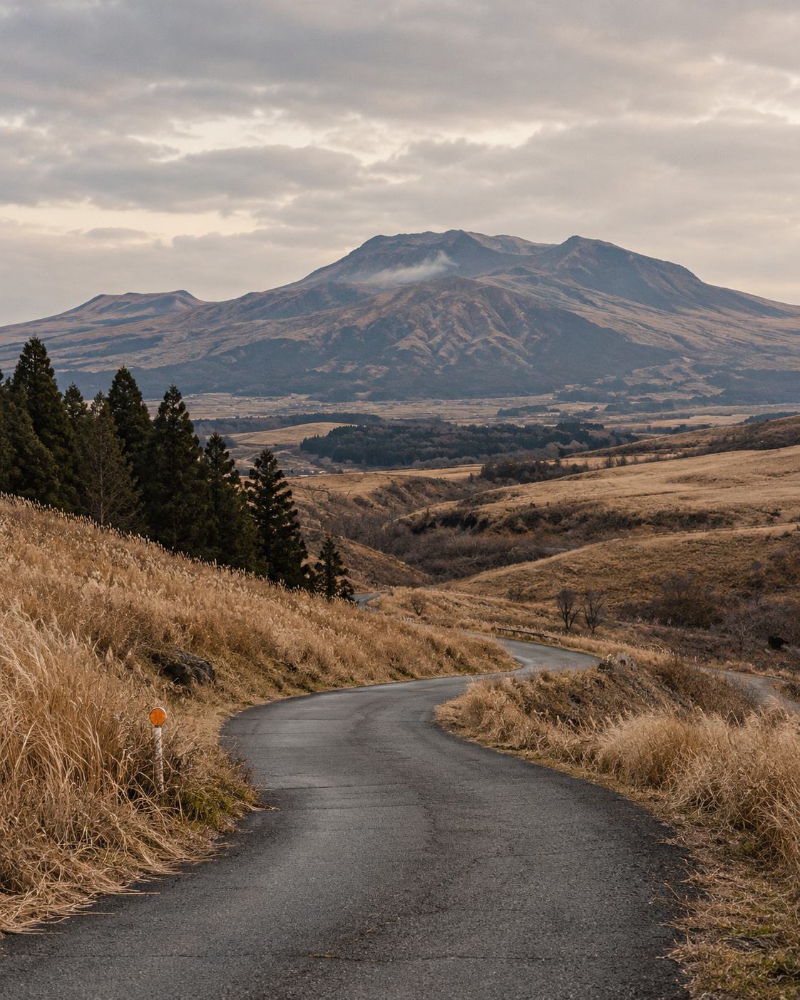

OUR WINTER JOURNAL / KYUSHU, JAPAN
FUKUOKA.
OUR NEXT
ROUTE.
เจ็ดวันในคิวชู เที่ยวในจังหวะของเรา
เริ่มจากราเมนในเมือง ขับออกไปหากาแฟและภูเขา
พักออนเซ็นที่ Beppu แล้วกลับมาส่งท้ายที่ Tenjin

THE ROUTE / OUT OF THE CITY
จาก Hakata ออกไป
แล้วกลับมาที่ Tenjin
17 ถึง 23 ธันวาคม
- 01 Hakata
- 02 Kurume
- 03 Kumamoto
- 04 Aso
- 05 Beppu
- 06 Tenjin
รถเช่า Relax 19 ธ.ค. 12:00 ถึง 21 ธ.ค. 12:00 · เส้นนี้แสดงลำดับเมือง ใช้ Google Maps รายวันสำหรับนำทางจริง
001 / THE DAILY PLAN
หนึ่งวัน หนึ่งเส้นทาง
เลือกวัน ดูหมุด แล้วค่อยออกเดินทาง
YOUR PLACES / ON THE MAP
แผนที่ประจำวัน
เปิดลิงก์ต้นฉบับเพื่อดูตำแหน่งและกดนำทางใน Google Maps
เลือกหมุดเพื่อดูทีละสถานที่ของวันนั้น ดูการเดินทางจากปุ่มเส้นทางอ้างอิงด้านล่าง หากแผนที่ไม่แสดง ให้กดเปิดหมุดใน Google Maps
ช่วงเวลาเป็นแนวทาง ตรวจรอบเดินทางและเวลาเปิดอีกครั้ง
002 / FOOD AND GOOD STOPS
ของกินและหมุดที่เก็บไว้
Shin Shin ราเมน เนื้ออากะ กาแฟ และที่อยากแวะ
หมุดส่วนใหญ่ใช้คำค้นชื่อ ให้ตรวจตำแหน่งก่อนนำทาง ส่วน Relax ใช้ลิงก์รับและคืนที่คุณส่งมาโดยตรง
003 / WHERE WE STAY
พักให้พอ แล้วค่อยไปต่อ
6 คืน / 4 จุดพัก / ผู้ใหญ่ 2 คน
004 / THE PRACTICAL PART
รู้ค่าใช้จ่าย
ก่อนออกเดินทาง
แผนนี้ใช้รถเช่าและพัก 4 จุด ยอดรวมยังรอตรวจจากตั๋ว voucher และการจองจริง
ค่าฟาร์มในโบรชัวร์ ¥2,400 / 50 นาที ต้องยืนยันราคาต่อคนและรอบจริงก่อนรวมงบ
ราคาของ Relax ต้องตรวจแยกจากเงื่อนไข HM005 / BEFORE WE GO
เตรียมให้พร้อม แล้วไปกัน
มี eSIM แล้ว · ยื่นขอใบขับขี่สากลแล้ว แต่รอเช็กการรับเล่ม · กรอก Guest Information ของ Beppu แล้ว
ในเว็บเก็บเฉพาะแผนและสถานะ ส่วนเลขจอง PIN พาสปอร์ต และ QR ตั๋ว เก็บไว้ในพื้นที่ส่วนตัว
SAVED FOR 22 DECEMBER / TENJIN
ปิดวันด้วย
SHIN SHIN.
กลับจาก Tosu แล้วไปหาราเมนชามนี้ด้วยกัน
Tenjin Honten ยังต้องตรวจวันเปิดและคิวใกล้เดินทาง